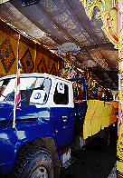
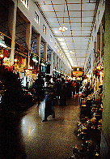
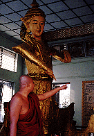
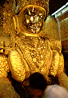
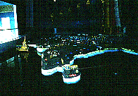
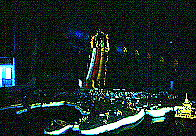

マハムニパゴダ/マンダレー
MahaMuniPagoda/Mandalay
マンダレー最大のパゴダ。お目当ては仏教アジア制覇のジオラマであった。
周辺は土産物屋の他、仏具屋、僧服屋、そして大理石の仏像工房などがありとてもエキサイティング。

門前にて。トラックの荷台で出撃準備完了！状態の仏像達。

門前はお土産屋が並んでいる。さすがマンダレーの古刹。
しかし仏像を作る大理石工房街や仏具屋街の門外のほうがエキサイティングだった。
 
何処からともなく現れた坊さんに勝手にパゴダ内を案内される。
もう、なされるがまま状態。
あの〜、あんまり時間ないんですけどお〜。
 
で、散々引きずり回されてからやっと博物館内の仏教アジア制覇ジオラマに到着。
と思ったら、後ろでガラガラガッチャーンと扉の閉まる音。
げえ〜、もう閉館の時間じゃんか。
というわけで、慌てて撮った写真がコレ。
三脚組んでる時間なし。フラッシュの光は届かない。従って真っ暗。
皆様、想像力をよ〜く働かせてイメージしてください。
次はザガインだ！
ミャンマーパゴダ列伝のページへ
珍寺大道場 HOME